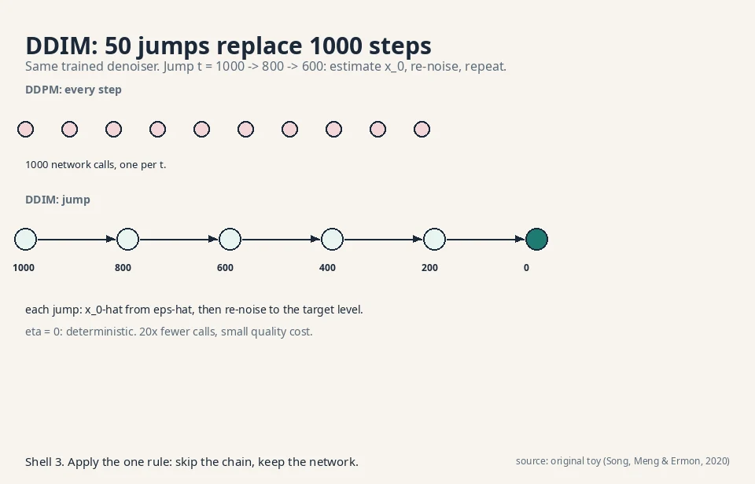
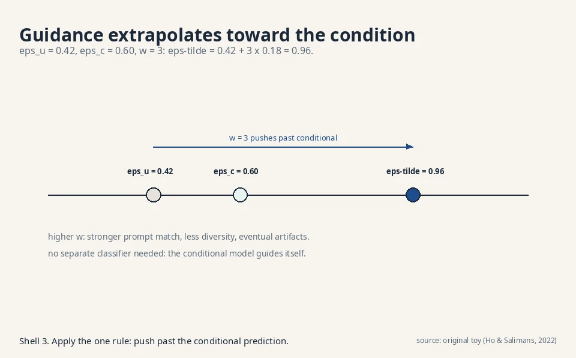

Math-GenModels Crash Course
60 minutes · exam speed
This page tells the whole model-families story at exam depth. Each section gives you the working version plus the failure modes, the production tradeoffs, and the debugging rules. Read it alone and you can clear the exam. Links at the end of each section take you into the full lesson for the derivations.
1. The one question
Learn the rule behind samples, then draw fresh samples from it. Counting needs one counter per outcome: 2^1024 for a thumbnail, ~10^473000 for a photo. Counting is maximum likelihood: the counts are the rule that makes the data most probable. Every family replaces the table with a smooth function so similar outcomes share learning. Five machines: the storyteller (steps), the sculptor (hidden causes), the warper (invertible bends), the restorer (denoising), the critic (energy valleys). A sixth, the GAN, plays a two-player game instead of maximizing likelihood.
Two jobs hide inside the question: density estimation (learn the numbers) and sampling (roll the numbers). The storyteller and warper do both with one mechanism. The sculptor and restorer approximate the density but sample exactly. The critic samples without ever computing densities. When an exam asks “which families give exact likelihoods,” the answer is the storyteller and the warper only.

Trap: “Why not just memorize the dataset?” Replay assigns zero probability to anything new, and the table cannot even be stored (10^473000 counters). The job asks for the rule, not the samples.
Self-test: Q1: A 64x64 binary icon generator uses a counting table. How many counters? A: 2^4096. Impossible. Any counting answer is wrong. Q2: Which two families give exact densities? A: Storyteller (chain rule) and warper (change of variables).
2. The storyteller: chain rule and teacher forcing
Factor the sequence: 0.80 x 1.00 x 0.75 = 0.60, an identity, not an approximation. The factorization tree shows every path: each root-to-leaf product is a sentence probability. Train on true histories (teacher forcing): loss 1.155 nats, perplexity 1.47 = exp(1.155/3) on the toy. The loss is negative log-likelihood. Perplexity 20 means the model puts 1/20 mass on the true next token on average. The causal mask makes attention autoregressive: “helped” becomes [0.50, 0.50], “frame” keeps [0.79, 0.79].

Two prices. Exposure bias: training sees true histories, sampling sees the model’s own guesses. At 10% error per step, 0.9^20 = 0.12 of 20-token samples stay fully on track, and one wrong token (“the dog”) cuts the next step’s confidence from 0.75 to 0.10. Serial sampling: 1,000 tokens at 20 ms = 20 seconds. The KV cache cuts per-step cost from O(N^2) to O(N) but not the serial wait.
Decoding is a second product: temperature T = 0.5 sharpens “cat” to 0.864 (safe), T = 2.0 flattens to 0.502 (wild). Top-p = 0.9 cuts the nonsense tail. Chat products run T ~ 0.7 with top-p ~ 0.9.

Failure mode: the model drifts off-topic mid-paragraph. That is exposure bias: one bad token poisons the history. Debug with lower temperature or top-p, not more training.
Production: GPT-4, Claude, Gemini (next-token, causal mask). WaveNet (audio, one sample at a time). DALL-E 1 (transformer over image codes).
Self-test: Q1: Compute perplexity from loss 2.3 nats/token. A: exp(2.3) = 9.97. Q2: Why does the KV cache not help training? A: Training is one parallel pass. Nothing repeats. The cache serves only the serial sampling loop. Q3: Your autocomplete has a 50 ms budget at 20 ms/token. Name two fixes. A: Smaller model (5 ms/token buys 10 tokens) or speculative decoding. Never temperature: it does not change speed.
3. The sculptor: VAEs and the reparameterization trick
Encoder outputs a distribution (mu, sigma), not a point. ELBO = reconstruction minus KL rent: 2.318 nats at mu = 2.0, sigma = 0.5. One Jensen step makes the bound: log of an average >= average of the log. The gap is the encoder’s error. Diagonal Gaussians keep it cheap: full covariance would cost O(d^3).
The trick: z = mu + sigma x epsilon moves the dice roll out of the parameter path. With epsilon = 0.6: z = 2.3, dz/dmu = 1, dz/dsigma = 0.6. Backprop flows. Sample z ~ N(0,1) and decode.

Price: blur. The KL leash crowds codes toward the prior, so the decoder averages: z = 0 decodes to 5, the average of the two photos. Smoothness fills the holes and averages the outputs: one mechanism. Posterior collapse: a too-strong decoder ignores z, KL = 0 everywhere. Detect via KL per axis (zeros = dead). Fix with KL annealing or a weaker decoder. beta-VAE: beta < 1 sharpens, holes return. VQ-VAE: discrete codebook (8,192 codes, 13 bits each), straight-through gradients, no collapse possible, the storyteller’s tokenizer.
Failure mode: latent interpolations do nothing. That is collapse, not a bad prior. Check KL per axis first.
Production: VAEs ship as compressors. Stable Diffusion’s VAE (512 to 64, the latent room). DALL-E 1’s dVAE. VITS speech.
Self-test: Q1: Compute the KL rent at mu = 2.0, sigma = 0.5. A: 0.5 x (4 + 0.25 - 1 - log 0.25) = 2.318 nats. Q2: Why does the reparameterization gradient beat REINFORCE? A: Pathwise derivative dz/dmu = 1 is exact per sample. Far lower variance. Q3: beta = 0.1 on the toy: what happens? A: Rent drops 10x, codes spread to +-0.9, reconstructions sharpen, holes return.
4. The warper: exact densities via change of variables
p_x = p_z / |det J|. Stretch by 2, density halves (0.5 on [1,3]). Probability mass is conserved: the determinant is the volume exchange rate. Folds need branch sums (x = z^2 gives two terms), so invertibility is mandatory. General determinants cost O(d^3): 10^9 ops at d = 1,000.
Coupling layers make the Jacobian triangular: x_b = z_b x s(z_a) + t(z_a), inverse by arithmetic, det = product of the diagonal (log det = 0.693 on the toy). MAF: fast density, serial sampling. IAF: the mirror. Glow adds 1x1 convolutions and ActNorm. Continuous flows (neural ODEs) trade the determinant for a trace integral. Dequantize first: pixel 123 becomes 123.4, because integers have no density.

Prices: rigid architectures (half the variables frozen per layer), frozen dimension (no compression: a 256x256 image needs a 196,608-dim warp), no residual blocks (x + f(x) folds).
Failure mode: s(z_a) = 0 kills invertibility. Parameterize s as exp(s-hat): always positive, log det is a clean sum.
Production: WaveGlow (NVIDIA speech vocoder). Anomaly detection (exact p(x) per reading). Lossless compression (bits-back needs exact probabilities).
Self-test: Q1: Round-trip the toy: z = [0.5, 1.0], s = 2, t = 1. A: Forward [0.5, 3.0]. Inverse: z_a = 0.5, z_b = (3-1)/2 = 1.0. Q2: MAF or IAF for anomaly detection? A: MAF: density is its fast direction. Q3: Why did diffusion beat flows for images? A: Rigidity. Free-form denoisers fit images better per parameter. Flows pay exactness with architectural discipline.
5. The restorer: DDPM forward and reverse
Fixed destruction: 0.8 -> 0.846 -> 0.80177, signal gone after 1,000 steps (0.99^1000 = 0.000043). Beta grows 1e-4 to 2e-2: whisper early, shout late. Alpha-bar: 0.90 at t = 100, 0.08 at t = 500, 4e-5 at t = 1000. Closed-form jumps give free training pairs at every noise level: x_t = sqrt(alpha-bar_t) x_0 + sqrt(1-alpha-bar_t) epsilon.
The network predicts the added noise: loss (0.5 - 0.42)^2 = 0.0064, plain regression, no adversary. Epsilon, x_0, and v are equivalent targets. Epsilon has the stablest scale. Sampling runs 1,000 reverse steps from pure noise. The ELBO is a sum over steps. L_simple drops the weights (better samples, no longer a bound).

Latent diffusion: 512x512x3 -> 64x64x4 = 48x fewer numbers per step. The sculptor compresses, the restorer dreams. This is Stable Diffusion.
Price: 50 seconds per image at 50 ms per step. T is large because small steps keep each reversal near-Gaussian and the ELBO tight.
Failure mode: plasticky samples with no fine detail. The schedule destroyed details too early: try the cosine schedule.
Production: Stable Diffusion 1/2 (latent), DALL-E 2 (unCLIP), Imagen (cascaded), Sora (diffusion transformer), SD3 (rectified flow).
Self-test: Q1: One training step on the toy. A: t = 1, eps = 0.5, x_1 = 0.846, predict 0.42, loss 0.0064. Q2: 2-second budget, 50 ms/step: design the sampler. A: 40 DDIM jumps, eta = 0, guidance w ~ 7. Q3: Why not train at T = 40 directly? A: Large T keeps each reversal learnable. Train at 1,000, sample at 40.
6. The slope reader: score matching and shortcuts
Score s(x) = grad log p(x) = -x for N(0,1). Learn it by denoising: target (x - x-tilde)/sigma^2 = -1.2 on the toy, no density estimated. Density-first fails: a 30% wobble turns true score -3 into -1.793. Sample with Langevin: 2.3 -> 2.059 at delta = 0.1. Delta = 1.0 overshoots to 1.15.
DDPM’s noise predictor IS a score predictor: s = -0.42/0.1 = -4.2. One machine, two notations. The SDE trio: forward SDE destroys, reverse SDE restores, probability-flow ODE walks straight. One score drives all three.

DDIM: 1,000 steps -> 50 jumps, same network, eta = 0 deterministic. 20x speedup, no retraining. Guidance: epsilon_u + w(epsilon_c - epsilon_u) = 0.96 at w = 3. w ~ 7 in production. Classifier-free won: no second model. Flow matching: straight lines x_t = (1-t) x_0 + t eps, velocity targets. SD3 uses rectified flow.

Price: no likelihoods (the constant dies under differentiation). Step sizes must stay small.
Failure mode: prompt ignored at 20 steps. Raise w first, then switch to DPM-Solver, then distill. Oversaturated colors mean w too high.
Production: nobody ships raw DDPM. The stack is latent diffusion + DDIM-family sampler + classifier-free guidance.
Self-test: Q1: One DDIM jump from t = 1000 to 800. A: x_0-hat from eps-hat, then x_800 = sqrt(alpha-bar_800) x_0-hat + sqrt(1-alpha-bar_800) eps-hat. No fresh noise. Q2: Why does the score lose the normalizing constant? A: grad log p = grad p / p. The constant vanishes under differentiation. Q3: Flow matching vs diffusion in one line. A: Straight velocity targets vs curved score paths. Fewer steps to integrate.
7. The critic: energies without normalization
p(x) = exp(-E(x))/Z. Toy Z = 1.8711, p = [0.0723, 0.1966, 0.1966, 0.5345]. Z over images is intractable (~10^290 years), so train by contrast: lower data energy, raise fantasy energy. CD-1: one MCMC step from data, theta [0,0,0,0] -> [0,-0.1,0,0.1], mass moves fantasy -> data. Persistent CD keeps chains alive in a replay buffer. Score matching trains E without Z because differentiation kills constants. Score = -grad E: L06’s sampler is this sampler.

Superpower: energies compose by addition. E_face + E_smile = [2,4] -> p = [0.881, 0.119]. No retraining. No other family composes like this.
Prices: biased gradients (CD-k is not the gradient of any fixed objective. One-sample variance 0.25 on the toy), no normalized probabilities, chains stuck in one valley (the sampler’s mode collapse. Tempering is the fiddly fix).
Failure mode: spurious valleys that never fill. The negative phase cannot see them: chains are too short or stuck. Switch to persistent CD.
Production: research stage. No verified deployment. The critic won the conceptual race: every family is an energy model with a Z strategy (exact, bounded, ignored).
Self-test: Q1: Why does Z cancel in CD? A: The gradient is data term minus model term. Z appears in both log-probs identically and cancels in the difference. Q2: CD-1 vs persistent CD in one line. A: Restart chains at data (biased, cheap) vs continue chains across batches (less bias, bookkeeping). Q3: When is the energy better than the score? A: Composition. Energies add into a joint density. Scores give only slopes.
8. The judges
Likelihood: exact for storyteller and warper. log 0.6 = -0.511 beats log 0.4 = -0.916. Blind spot: Blurry (-0.693) beats Sharp (-infinity) by infinite nats. Likelihood measures coverage, not crispness. Bits per dimension is the fair scale. Say bound vs exact.
FID: Frechet distance of Inception feature Gaussians. 0.5 for a mean shift, 1.5 for doubled spread. The leaderboard standard. Blind spots: memorization scores 0 (the parrot), spike mixture scores 0.005 (same mean/variance, different shape), ImageNet features judge dogs not scans. KID: unbiased, O(n^2), for small samples.

Inception Score: a 1,000-photo memory machine scores 1000. Never sees real data. Keep for quick checks, trust FID more.
Catch the parrot: nearest-neighbor distances (~0 = memorization) and the train/test FID split (memorizer diverges). Precision/recall: 0.8/0.5 on the toy. Mode collapse is 1.0 and 0.1. The pair diagnoses what FID averages. Density/coverage refines against gaming.

Real answer: a portfolio. Likelihood where it exists, FID for the leaderboard, CLIP for prompt match, precision/recall for diagnosis, nearest-neighbor for the parrot audit, humans for the final word.
Failure mode: FID improves but users complain. Check memorization first, then the feature-space fit, then precision vs recall separately.
Self-test: Q1: Compute FID for mean shift 0.5, same covariance. A: FID^2 = 0.25, FID = 0.5. Q2: Why is KID unbiased but rarely used at 50k samples? A: O(n^2) cost: 2.5B kernel evaluations. Q3: Name the launch portfolio. A: FID, CLIP, precision/recall, nearest-neighbor, humans.
Memory aids: the exam kit
Mnemonics. Five machines: “Stories Sculpt Warps, Restorers Criticize.” Five prices: “Serial, Blurry, Rigid, Slow, Blind.” Exact densities: “Stories Warp exactly” (storyteller, warper). DDIM: “Jumps, not walks.” Guidance: “Push past the conditional.”
Never-confuse pairs. Chain rule (identity) vs teacher forcing (training procedure). ELBO (bound) vs likelihood (truth. Gap = encoder error). Score (slope, -grad E) vs energy (surface). DDPM (1,000 stochastic steps) vs DDIM (few deterministic jumps, same network). FID (biased, O(n), leaderboard) vs KID (unbiased, O(n^2), small samples). Precision (sample quality) vs recall (mode coverage). MAF (fast density) vs IAF (fast sampling). Temperature (mood) vs top-p (sanity guardrail).
If-this-then-that. Ordered data -> storyteller. Exact p(x) needed -> warper (MAF). Best samples, slow OK -> restorer (latent + DDIM + guidance). Models must compose -> critic. Sampling too slow -> DDIM first, then distill. Prompt ignored -> raise w first. Latent dead -> check KL per axis. FID up but users unhappy -> nearest-neighbor, then precision vs recall. Compare likelihoods -> bits per dimension, same dataset, bound vs exact declared.
The one-glance table.
| Family | Density | Sampling | Price | Ships in |
|---|---|---|---|---|
| Storyteller | Exact | Serial, 20 s/1k tokens | Exposure bias | GPT-4, WaveNet |
| Sculptor | Bound (ELBO) | One decode | Blur | SD’s VAE, VITS |
| Warper | Exact | One warp | Rigidity | WaveGlow |
| Restorer | Bound | 1,000 steps, 50 s | Slow | Stable Diffusion, Sora |
| Critic | None | Langevin | Bias, stuck | Research |
| GAN | None | One pass | Unstable | StyleGAN |
Rapid-fire self-test (answers below)
- 2^1024 counts what, and why is it impossible?
- Chain rule: identity or approximation?
- Perplexity 20 means what?
- Teacher forcing feeds what at each step?
- 0.9^20 = ?
- KV cache: what does it store, what does it not fix?
- ELBO’s two terms and the toy KL value.
- z = mu + sigma x epsilon: name dz/dmu and dz/dsigma at epsilon = 0.6.
- Posterior collapse: symptom and first check.
- Coupling layer: forward, inverse, and log det on the toy.
- Why triangular -> O(d)?
- MAF vs IAF: which direction is fast for each?
- DDPM forward step on the toy: x_0 = 0.8 -> x_1 = ?
- Alpha-bar at t = 100, 500, 1000 (linear schedule).
- Latent diffusion: the 48x in one line.
- Score of N(0,1) at x = 2.3.
- DDPM noise 0.42 at t = 1 becomes what score?
- DDIM: what is eta = 0?
- Guidance toy: 0.42 + 3 x 0.18 = ?
- CD-1: theta update on the toy.
- Energies E = [2,1] + [0,3]: composed p?
- FID toy: mean shift 0.5 -> ? Doubled spread -> ?
- Mode collapse in precision/recall numbers.
- The parrot: which two tests catch it?
Answers. 1: Outcomes of a 32x32 binary image. More counters than atoms exist. 2: Identity. Approximation enters only in the estimated conditionals. 3: 1/20 average mass on the true next token. 4: The true previous tokens, never its own guesses. 5: 0.12. Only 12% of 20-token samples stay clean. 6: Past keys and values. It does not fix serial sampling. 7: Reconstruction reward minus KL rent. 2.318 nats. 8: 1 and 0.6. 9: Latent interpolations do nothing. Check KL per axis for zeros. 10: [0.5, 3.0] forward, [0.5, 1.0] inverse, log det 0.693. 11: Determinant of a triangular matrix is the diagonal product: d multiplications. 12: MAF fast density. IAF fast sampling. 13: 0.846. 14: 0.90, 0.08, 4e-5. 15: 512x512x3 -> 64x64x4 = 786,432/16,384 = 48x fewer numbers per step. 16: -2.3. 17: -4.2. 18: Deterministic jumps. Same x_T gives the same image. 19: 0.96. 20: [0,0,0,0] -> [0,-0.1,0,0.1]. 21: [0.881, 0.119]. 22: 0.5 and 1.5. 23: Precision 1.0, recall 0.1. 24: Nearest-neighbor distances and the train/test FID split.